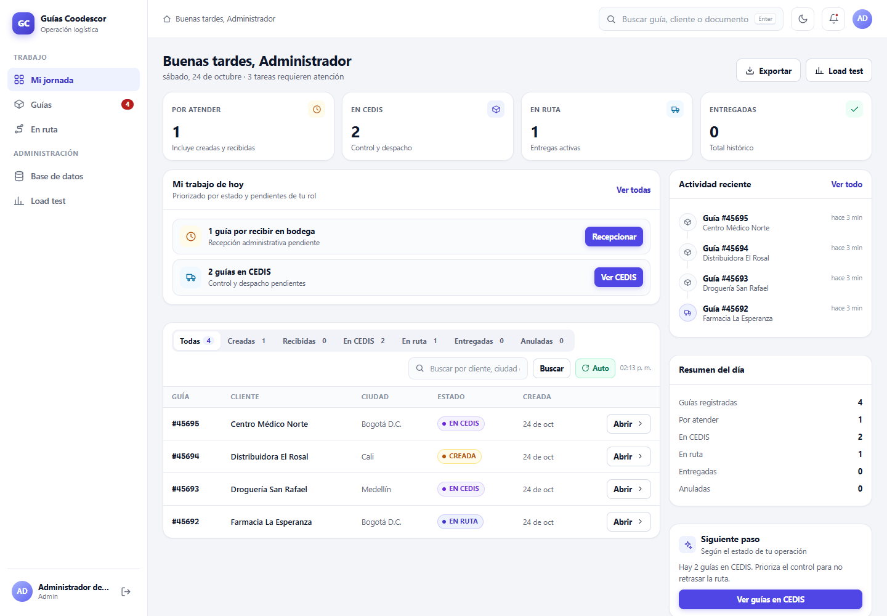
Tablero real · Mi jornada
Captura de la app en ejecución: KPIs accionables, tareas por rol y tabla de guías. Sin porcentaje de cumplimiento.
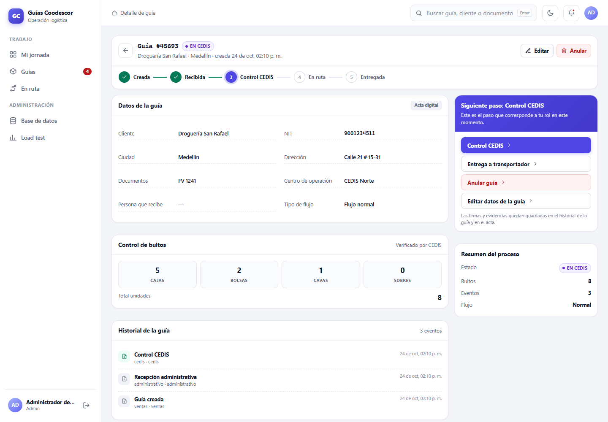
Detalle real de guía
Stepper del proceso, datos, bultos, historial y panel con el siguiente paso y firmas.
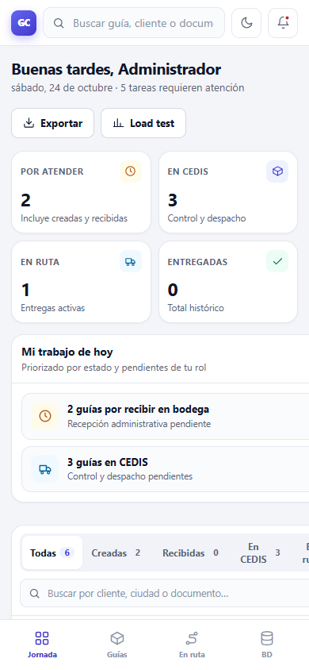
Tablero móvil real
Navegación inferior, KPIs en 2×2 y tarjetas; mismas reglas y datos que en escritorio.
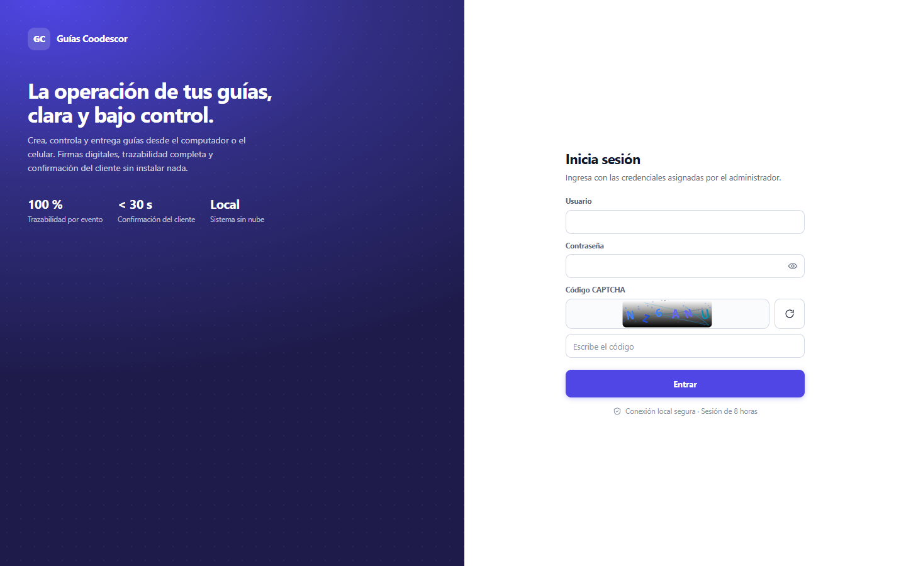
Login real
Diseño de dos paneles con CAPTCHA, mostrar contraseña y mensajes accesibles.
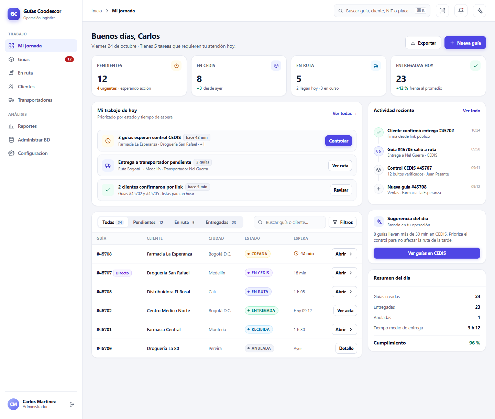
Mi jornada (tablero)
Barra lateral, KPIs accionables, tareas priorizadas y tabla compacta con el siguiente paso de cada guía.
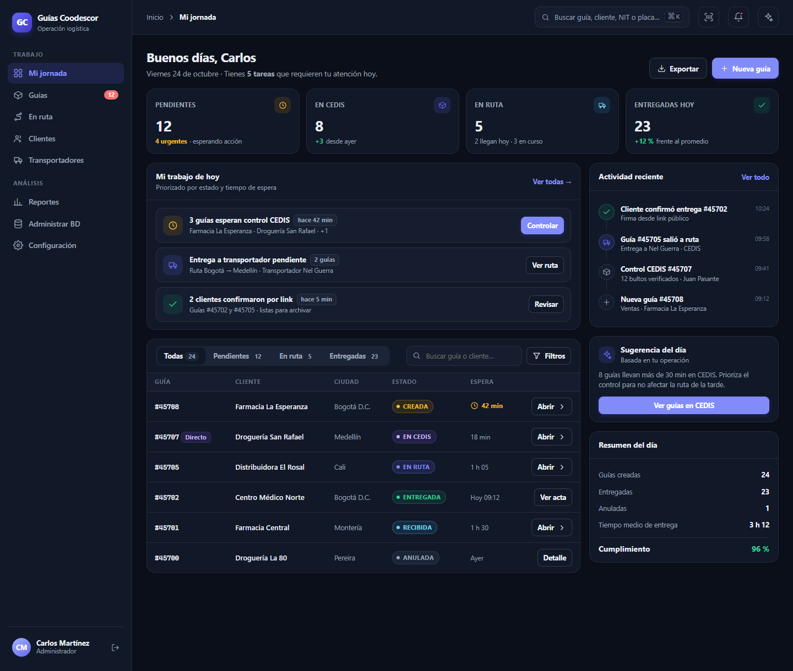
Misma jerarquía, tema oscuro
Tokens semánticos: el tema cambia sin reescribir componentes. Ideal para turnos nocturnos en CEDIS.
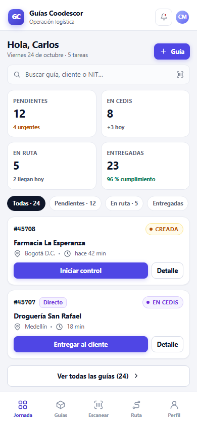
Mi jornada en el celular
Navegación inferior, KPIs de un vistazo, filtros en chips y tarjetas con la acción principal visible.
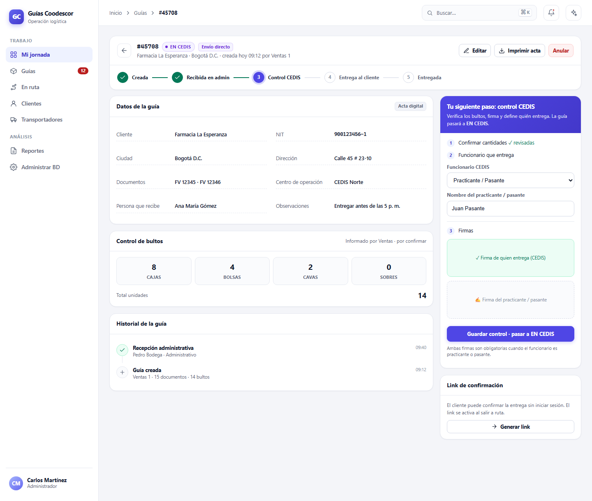
Detalle de guía
Línea de tiempo del estado, datos y bultos juntos, y un panel lateral con el paso que toca ejecutar (incluye practicante/pasante con su firma).
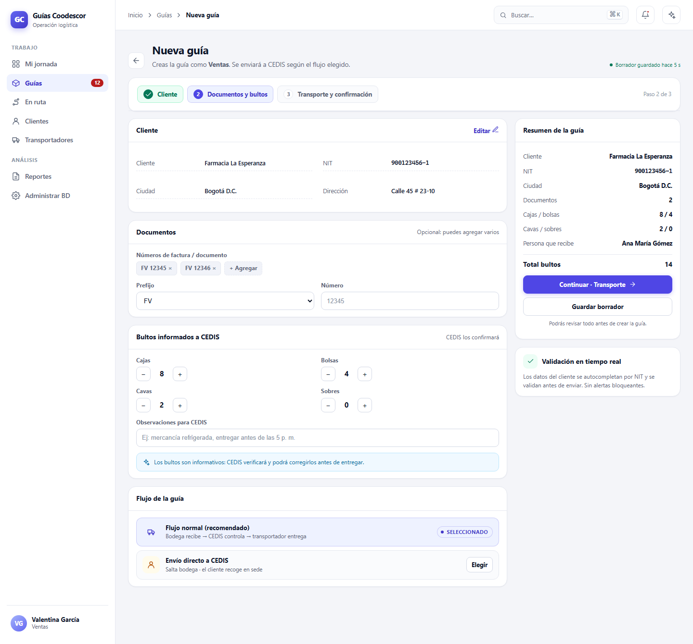
Nueva guía en 3 pasos
Asistente con resumen fijo, validación en línea y borrador automático; menos errores al crear.
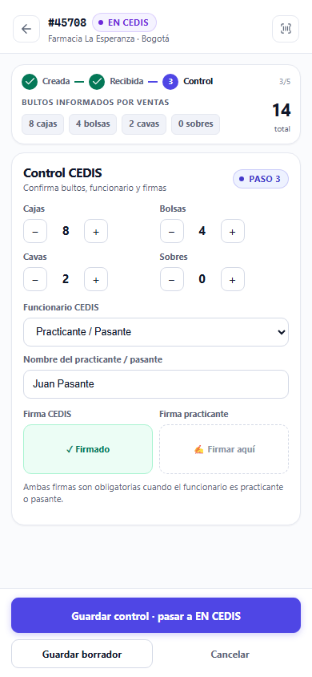
Control CEDIS desde el celular
Pantalla dedicada al paso, contadores grandes y firmas lado a lado para operar rápido en bodega.
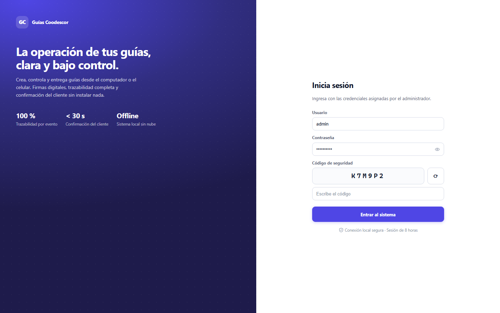
Inicio de sesión
Primera impresión de producto: marca, beneficios y formulario limpio con CAPTCHA claro.